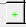
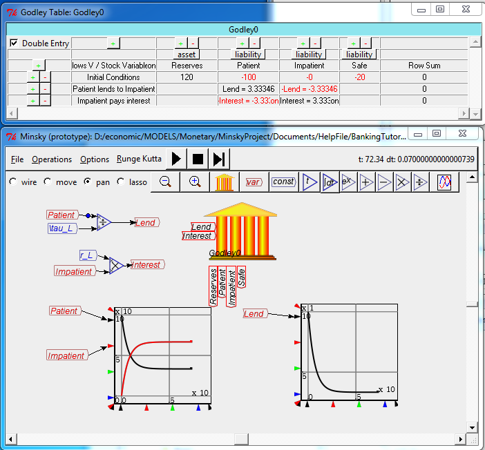

Our model begins with the single operation of Patient lending to Impatient at a rate that, if kept constant at its initial level of of $10 per annum, would empty the Patient account in 10 years. Because the rate of outflow declines as the Patient account declines, the money in the account decays towards zero but never quite reaches it.

Many more actions need to be added to this model to complete it. For a start, Impatient should be paying interest to Patient on the amount lent. Add an additional row to the Godley Table by clicking on the  key next to ``Patient lends to Impatient'' to create a blank row:

Then label this flow ``Impatient pays interest'' and make the entry ``Interest'' into the cell for Impatient on that row. Make the matching entry ``-Interest'' in the cell for Patient. The flow ``Interest'' now appears on the input side of the Godley Table on the Canvas:

Interest now has to be defined. It will be the amount in Impatient's account (since this began at zero) multiplied by the rate of interest charged by Patient:

With that definition, the dynamics of the model change: rather than the Patient account falling to zero and Impatient rising to 100, the two accounts stabilize once the outflow of new loans by Patient equals the inflow of interest payments by Impatient:

Though it stabilizes, this is is still a very incomplete model: neither Patient nor Impatient are doing anything with the money apart from lending it and paying interest. I am now going to assume that Impatient is borrowing the money in order to hire workers to work at a factory and produce output for sale. So we now need another account called Workers, and a payment from Impatient to Workers called Wage:
In a more complex model, the Wage bill could be related to the current rate times the number of workers in employment. In this simple model I will regard the wage as a function of the amount of money in Impatient's account turning over several times a year in the payment of wages. Using a time constant, I will assume that the amount in Impatient's account turns over 3 times a year paying wages, so that the time constant is 1/3rd of a year:

The dynamics of this incomplete model are very different again: very little money turns up in the Impatient account, and all of the money ends up in the Workers account. However economic activity also ceases as both lending and the flow of wages falls towards zero:

This is because wages are being paid to workers, but they are doing nothing with it. So we need to include consumption by workers-and by Patient as well. Here the reason time constants are useful may be more obvious. The time constant for consumption by Workers is given the very low value of 0.05--or 1/20th of a year--which indicates that if their initial rate of consumption was maintained without any wage income, they would reduce their bank balances to zero in 1/20th of a year or about 2.5 weeks.